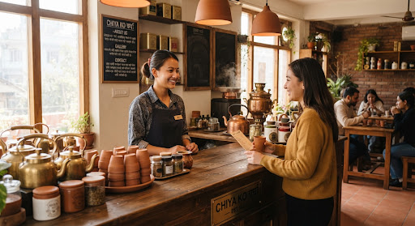
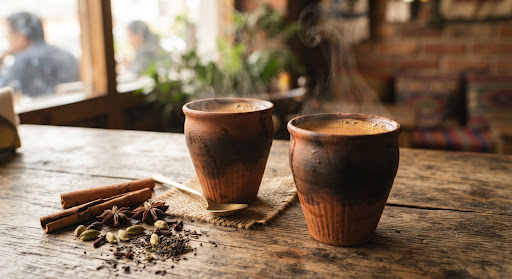
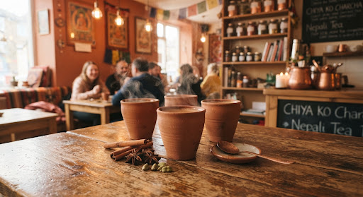
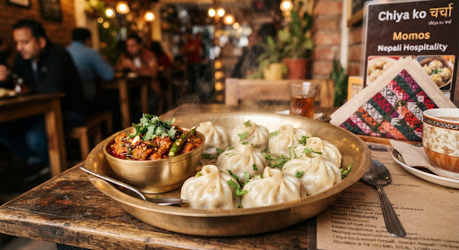
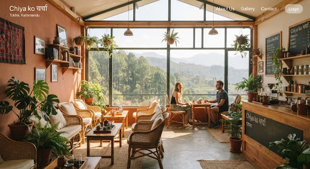
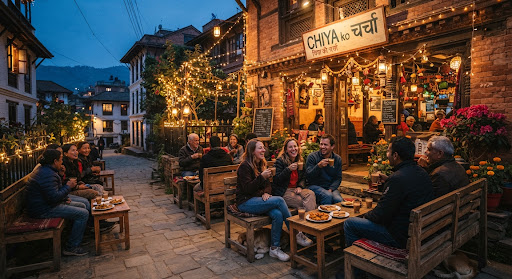
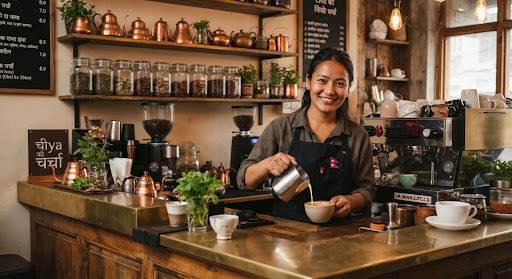

Where Tokha Gathers Over Steaming Cups of Chiya.
Rooted in authentic Nepali hospitality on Baniyatar Road, Tokha.
A warm sanctuary away from the city commotion, simmering orthodox eastern hill tea in unglazed earthen kulhads, spiced snacks, and spirited conversation.
“चिया मात्र होइन, मनको भावना साट्ने ठाउँ।”
In Nepali life, tea isn’t just a beverage; it’s an invitation to debate, reconnect, pause, and celebrate our community tapestry.
An unpretentious tea sanctuary crafted for slow mornings & spirited evening charcha.
Nestled on Baniyatar Road along Tokha’s historic gateway, चिया को चर्चा was born out of deep reverence for the traditional Nepali tea bench. In our culture, tea is never merely a beverage—it is a punctuation mark in daily life, an invitation to discuss neighborhood news, share poetry, debate football, and greet neighbors.
We work directly with artisanal smallholder cooperatives across the lush mist-wrapped slopes of Ilam, Dhankuta, and Panchthar. Every batch of CTC leaf is paired with creamy local milk, crushed green cardamom pods, cracked mountain cinnamon, and cold-pressed sun-dried ginger. Handled gently over simmering copper kettles, our tea is ladled hot into porous terracotta kulhads that infuse every sip with the grounding fragrance of wet earth.

Authentic Copper & Clay Brewing Bar

A Space For All
Students studying, morning walkers, & multigenerational families laughing under warm terracotta lamps.
Direct Farmer Sourcing
We source orthodox teas directly from eastern hill plantations in Ilam & Dhankuta, paying above-market fair rates to farming families.
The Art of Charcha (चर्चा)
No blaring music. Warm timber tables, quiet cozy corners, books to borrow, and free high-speed fiber Wi-Fi for work or hearty conversation.
Fresh Tokha Delivery
Steaming thermal chiya flasks and freshly steamed momos delivered across Baniyatar, Dhapasi, Grande Hospital stretch, and Tokha Chandeshwori.
Moments at Chiya ko चर्चा
A glimpse of everyday life in Tokha—from early morning mist along Baniyatar road to golden sunset conversations.

Kulhad Spiced Matka Chiya
Rich milk brewed with cardamom, clove & ginger in unglazed earthen clay.

House Special Steamed Momos
Handmade dumplings served alongside fire-roasted sesame and tomato achar.

Sunlit Valley Facing Seats
Natural pine tables looking out onto peaceful suburban ridges and morning air.
The High 'Chhaneko' Pour
Aerated for signature frothy texture and enhanced spice fragrance.

Evening Charcha Under Fairy Lights
Warm terrace lighting and community banter as dusk settles over Tokha.

Craft Behind The Counter
Every kettle tempered with measured heat, precision, and heartfelt hospitality.
Visit Our Tokha Adda
Located comfortably away from the dense Ring Road traffic, on the scenic Baniyatar stretch leading toward historic Tokha village.
Baniyatar Road, Tokha
Tokha Municipality, Ward 02,
Bagmati Province 44600, Kathmandu Valley, Nepal
Sunday to Saturday
6:00 AM – 11:00 PM
Reach our counter for advance takeaway packing, local delivery tracking, or book club seating reservations.
चिया को चर्चा
5.0 ★3 minutes north of Baniyatar Chowk, directly opposite the quiet community green belt. Dedicated two-wheeler parking available.
Planning a group charcha or table reservation?
Whether you are organizing a weekend book discussion, morning cycling pit-stop, or need a large thermal chiya order for your office in Tokha, let us know.
Your seat at the Tokha tea table is waiting.
Fresh kettles simmering daily from 6:00 AM to 11:00 PM.